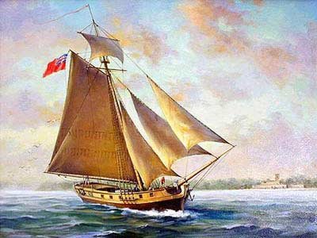
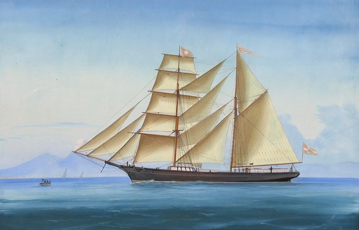
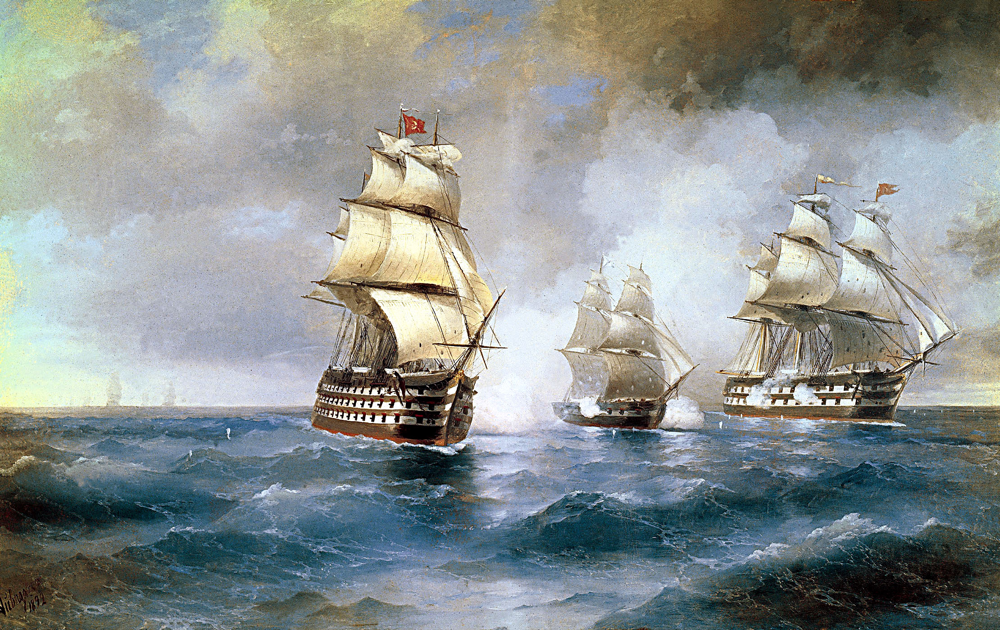
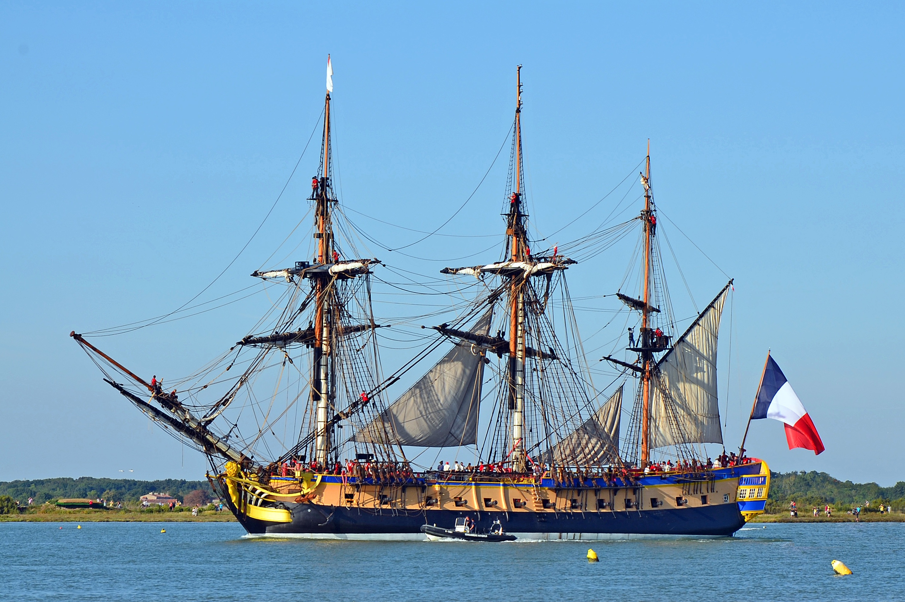
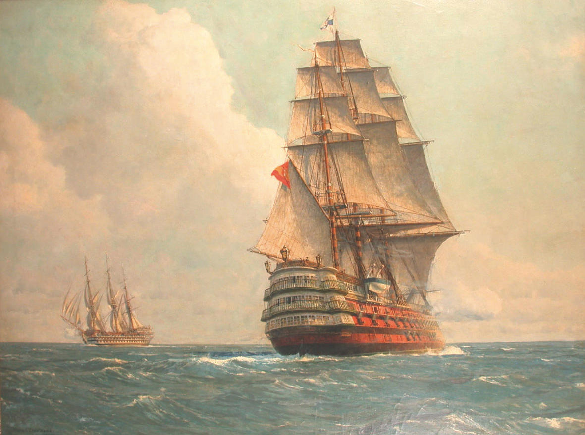
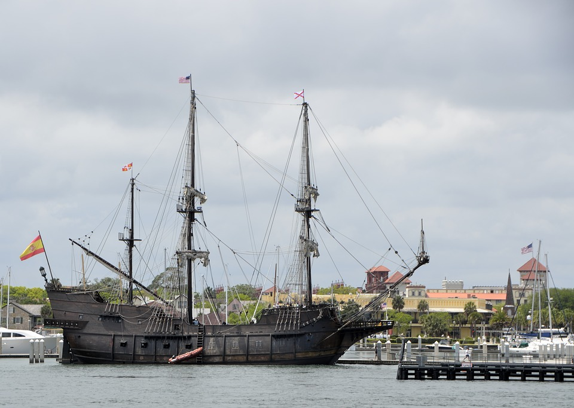

Learn your ships matey!
| Types of Ships | |
|---|---|
| Sloop
The sloop was an extremly common ship. They were fast and designed to carry goods and cargo at a fast rate which made them ideal for pirates to capture, since they could catch slower moving ships quickly. |
 |
| Brigatine
A brigatine is a two mast ship with the foremast square rigged and the mainmast fore-and-aft rigged. It was durable and boasted a huge cargo capacity which meant that this ship was able to hold large crews and weapons such as cannons and mortars. |
 |
| Brig
Similar to the brigatine, except this ship had two mast rigged with square sails and were much bigger than brigatines. These became popular for pirate, merchant, and warships since they were more manuverible than the average vessel of there size. The biggest disadvantage over them, was that they required a good size crew to sail and had a hard time sailing into the wind. |
 |
| Frigate
The frigate was the main "Ship of the Line". These ships boasted a huge upgrade over brigatine ships with three mast fully rigged and usually at least 28 cannons on board. These ships were warships that could chase down any ship and had devastating weapons like mortar and chainshot. Pirates loved these ships though it was usually a lot of work for a crew to take one. |
 |
| Man o' War
The British Man-o-War was a ship with one purpose. Bring order to Britian by destroying spanish and pirate ships alike and very seldom did they ever not succeed. Many pirates, including Blackbeard and Bartholomew Roberts, lost their lives at the hands of a Man-o-War captain. |
 |
| Galleon
Designed to be battleships or treasure ships. These ships had three mast and three decks. Boasting a high amount of cannons, these ships were Spanish equivilants to the British Man-o-Wars. Some of these Galleons fell into pirate hands during the Golden Age. The most well known Galleon was Blackbeard's ship Queen Anne's Revenge (originally named Concord) which was stolen on a merchant voyage. |
 |